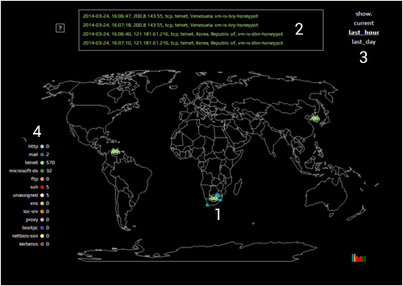

Welcome to the Attack Map. Please refer to the numbers on the map below for an explanation of what this attack map is about.
1 - We have placed a couple of honeypot servers around our network and connected it to this mapping tool to illustrate the origin and type of network scans that we see from around the world. The servers are running a honeyd service that responds to each scan appropriately as if it is real server.
2 - The block at the top of the screen shows a list of the most 4 most recent scans and provides the date and time, the source IP, the scan type info, the country of origin and the honedy server location.
3 - The links to the right of the info block let you switch between the current view (a realtime view which updates with each new scan) and a history view which will show you what happend in the last hour and the last day. [note: they would if this was operational, currently it only shows the activity for 1 May 2014]
4 - The list the left shows a count of the different scan types that increases each time it occurs.
